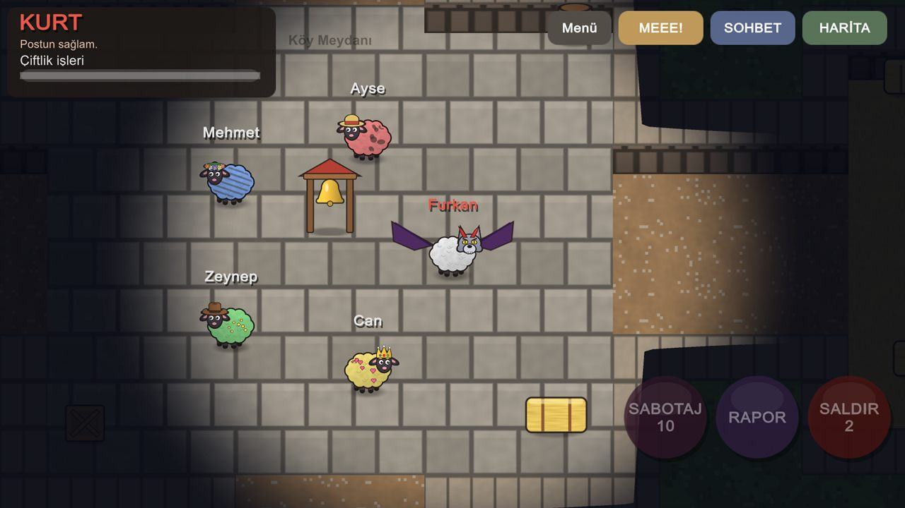
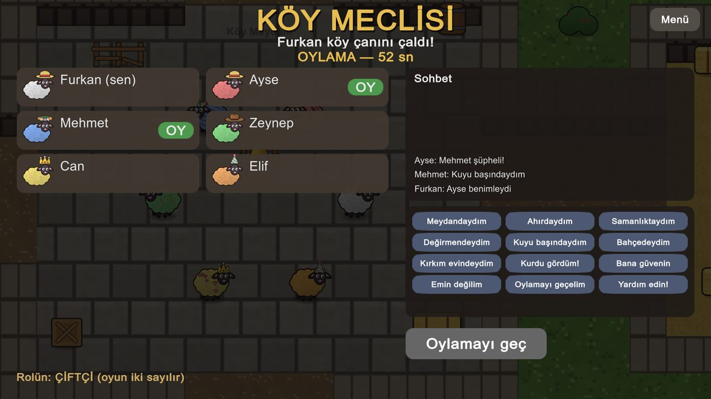
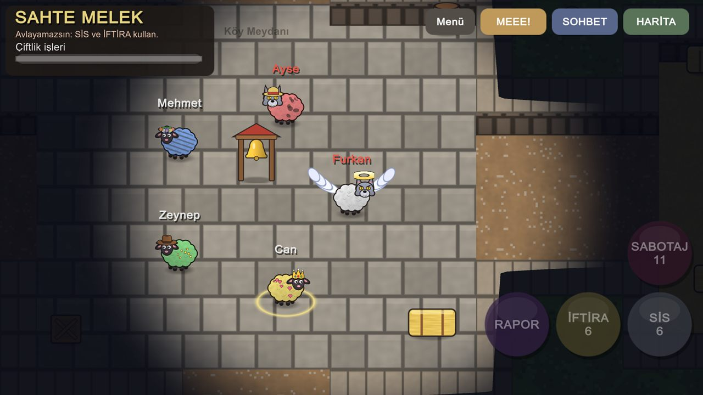
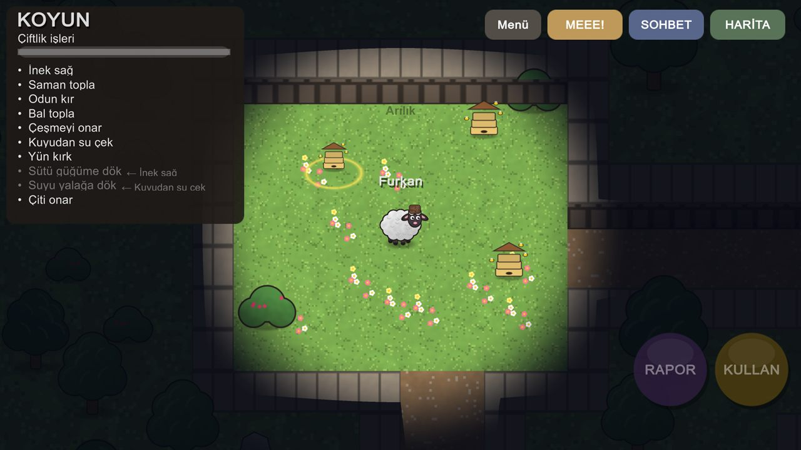
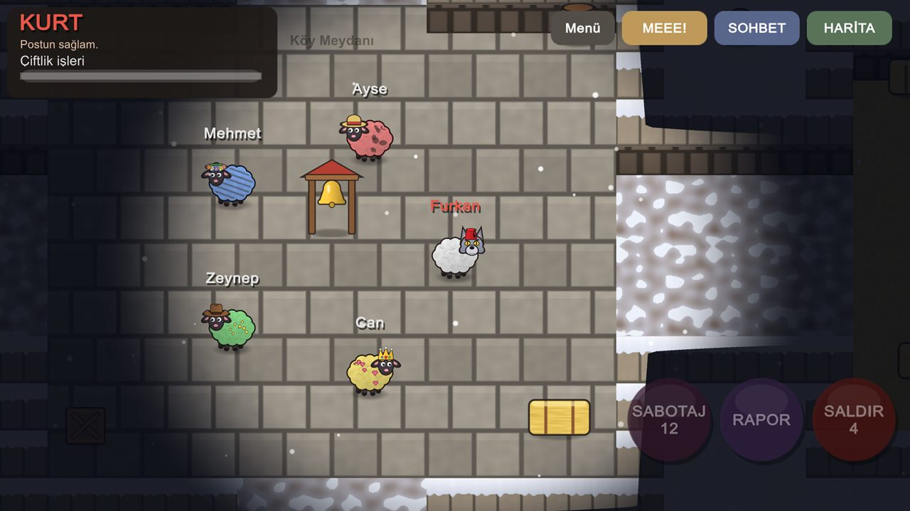
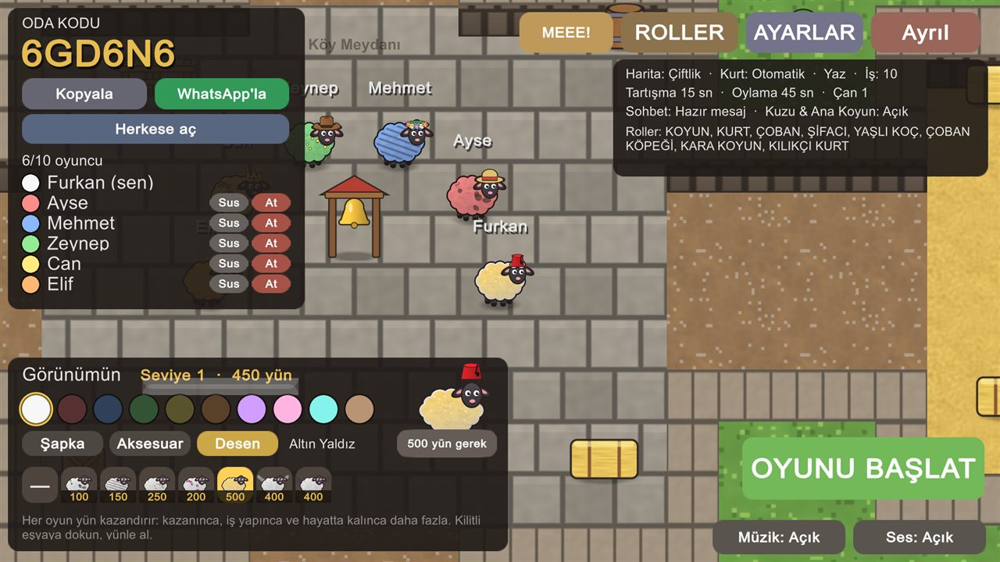

Kuzu Postu
Çiftlikte huzur bozuldu: sürünün içine koyun postuna bürünmüş kurtlar sızdı! Arkadaşlarınla oda kur, işleri bitir ve kurtlar sürüyü dağıtmadan önce onları bul.
Google Play — yakında
App Store — yakında






Neler var?
3 haritaÇiftlik, Yayla Köyü ve en büyüğü Liman Kasabası; her birinin kendine özgü işleri.
23 mini oyunİnek sağ, odun kır, bal topla, balık tut, feneri yak, çay demle, kayığı boya…
12 rolÇoban, Şifacı, Kuzgun, Kılıkçı Kurt, Sahte Melek, Tilki, Kara Koyun ve daha fazlası.
Kurt hileleriKuyuyu zehirle, kapıları kilitle, saklan, dolunayda güçlen.
Kendi odanı ayarlaSüreler, sohbet, iş sayısı, gizli oylama, roller.
Reklam ve satın alma yokGörünümler oynayarak kazanılan yünle açılır.
Nasıl oynanır?
Biri ODA KUR'a basar ve 6 haneli kodu arkadaşlarına gönderir; diğerleri kodu yazıp KATIL'a basar. En az 3 kişi gerekir, en eğlencelisi 6 ve üzeri. Tek başına denemek için oyundaki PRATİK modunu kullanabilirsin.